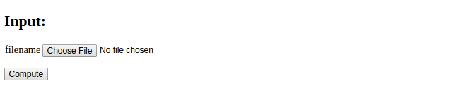

Many user interfaces need the user to provide data files. A minimalistic application is to have a button for uploading a single file. As example we use a file with a series of numbers, and the application's purpose is to compute the mean and standard deviation of the numbers. The first user interface just has the Choose File and Compute buttons:

Clicking on Choose File brings up a file browser where the user can
choose the file to uploaded to the application. Say this is a file
testfile.dat. The interface now looks like
Pressing thereafter Compute leads to storage of
testfile.dat on the server in a subdirectory uploads and
computation of basic statistics of the numbers in the file.
The resulting output looks like

The text "No file chosen" is automatically displayed by the widget object used for file upload and indicates that a new file can be chosen. Below we shall present all parts of the code needed to create this interactive application.
The widget FieldField is used for an input field with a Choose File
button:
import wtforms as wtf
class Average(wtf.Form):
filename = wtf.FileField(validators=
[wtf.validators.InputRequired()])
The controller file needs some special code to specify a directory to store uploaded files. We also include some code to check that the file has a name with the right extension.
# Relative path of directory for uploaded files
UPLOAD_DIR = 'uploads/'
app.config['UPLOAD_FOLDER'] = UPLOAD_DIR
app.secret_key = 'MySecretKey'
if not os.path.isdir(UPLOAD_DIR):
os.mkdir(UPLOAD_DIR)
# Allowed file types for file upload
ALLOWED_EXTENSIONS = set(['txt', 'dat', 'npy'])
def allowed_file(filename):
"""Does filename have the right extension?"""
return '.' in filename and \
filename.rsplit('.', 1)[1] in ALLOWED_EXTENSIONS
The index function must have code for saving the file, and as usual,
calling the compute function and rendering a new page:
def index():
form = Average(request.form)
filename = None # default
if request.method == 'POST':
# Save uploaded file on server if it exists and is valid
if request.files:
file = request.files[form.filename.name]
if file and allowed_file(file.filename):
# Make a valid version of filename for any file ystem
filename = secure_filename(file.filename)
file.save(os.path.join(app.config['UPLOAD_FOLDER'],
filename))
result = compute_function(filename)
else:
result = None
return render_template("view.html", form=form, result=result)
We assume that the uploaded file is available in the uploads
subdirectory, so the compute function needs to open this file, read
the numbers, and compute statistics. The file reading and computations
are easily done by numpy functions. The results are presented in
an HTML table.
import numpy as np
import os
def compute_mean_std(filename=None):
data = np.loadtxt(os.path.join('uploads', filename))
return """
Data from file <tt>%s</tt>:
<p>
<table border=1>
<tr><td> mean </td><td> %.3g </td></tr>
<tr><td> st.dev. </td><td> %.3g </td></tr>
""" % (filename, np.mean(data), np.std(data))
Although the present minimalistic application only needs a very simple HTML template, we reuse a quite generic template known from previous examples, where the input variables are listed to the left and the output of the compute function is presented to the right. Such a template looks like
<!DOCTYPE html>
<html>
<head>
<meta charset="utf-8" />
<title>Flask Average app</title>
</head>
<body>
<!-- Input and Results are typeset as a two-column table -->
<table>
<tr>
<td valign="top">
<h2>Input:</h2>
<form method=post action="" enctype="multipart/form-data">
<table>
{% for field in form %}
<tr><td>{{ field.name }}</td>
<td>{{ field(size=20) }}</td>
<td>{% if field.errors %}
<ul class=errors>
{% for error in field.errors %}
<li>{{ error }}</li>
{% endfor %}</ul>
{% endif %}</td></tr>
{% endfor %}
</table>
<p><input type="submit" value="Compute">
</form></p>
</td>
<td valign="top">
{% if result != None %}
<h2>Results:</h2>
{{ result|safe }}
{% endif %}
</td>
</tr>
</table>
</body>
</html>
The complete set of files is found in the upload directory.